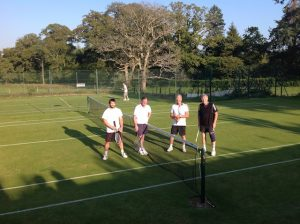

Championships
AVTCC holds an internal tournament during the grass court playing season, with Men’s and Ladies’ Singles, Men’s, Ladies’ and Mixed Doubles and Plate competitions or first round losers in each category.
We also stage several one-day internal and open tournaments during the season.
Please see the Diary Dates page for further details.
Tournament Winners 2019
Simon Vickers Memorial Cup
Rachel Brown & Peter Forde
Internal Tournament
Gentlemen’s Singles: Simon Moorman
Ladies’ Singles: Barbara Robillard
Gentlemen’s Doubles: David Trulock and Barry Smith (Kingsley-Jones Trophy)
Ladies’ Doubles: Jennie Hanson and Nikki Hanson
Mixed Doubles: Julie Elliott and David Trulock (Jill Claro Cup):
Previous Years
| Year | Gentlemen Singles | Ladies Singles | Mixed Doubles | Ladies Doubles (Jill Claro cup) | Mens Doubles | Simon Vickers Memorial Cup |
|---|---|---|---|---|---|---|
| 2023 | Jonathan Bushby | Susanne Sykes | Jenny Hansen & Simon Bronstein | |||
| 2022 | Susanne Sykes | Jenny Hansen & Simon Bronstein | ||||
| 2019 | Simon Moorman | Barbara Robillard | David Trulock & Barry Smith | Jennie Hanson & Nikki Hanson | Rachel Brown & Peter Forde | |
| 2018 | Mike McClement | Barbara Robillard | Lara Trotman & John Loftus | |||
| 2017 | Mike McClement | Juliet Collis | ||||
| 2016 | Sam Oldershaw | Juliet Collis | Andy Coombs & John Loftus | |||
| 2015 | Sam Oldershaw | Juliet Collis | Juliet Collis & Steve Levy | |||
| 2014 | Mike McClement | Helen Cock | Andy Coombs & John Loftus | |||
| 2013 | Malcolm Dare | Natalie Hepburn | Amanda Sinclair & Simon Lewis | |||
| 2012 | Jonathan Bushby | Juliet Collis | Cally Dalgleish & Anthony Lyons | Helen Cock & Francesca Smith | Caroline Newton & Anthony Lyons | |
| 2011 | Mike McClement | Maddie McClement | Juliet Collis & Josh Adams | Amanda Sinclair & Diana Gower | Steve Levy & Josh Adams | Francesca Smith & George Lance |
| 2010 | Sam Oldershaw | Jenny Sims | Diddie Sims & George Seager Berry | Diddie Sims & Liz Lacon | Malcolm Dare & Steve Scott | Juliet Collis & Sam Oldershaw |
| 2009 | Jonathan Bushby | Jenny Sims | Juliet Collis & Mike McClement | Jane Gent & Francesca Smith | Malcolm Dare & Steve Levy | Jilly Peters & George Lance |
| 2008 | Steven Fowles | Anna Bushby | Denise Orchard & Mike McClement | Juliet Collis & Jane Gent | John Loftus & Mike McClement | Jenny Sims & Nigel King |
| 2007 | Steven Fowles | Denise Orchard | Jane Gent & Mike McClement | Amanda Sinclair & Jenny Sims | Nigel King & Malcolm Dare | Jenny Sims & Nick Newton |
| 2006 | Jonathan Bushby | Denise Orchard | Denise Orchard & Mike McClement | Jane Gent & Andy Coombs | Steve Levy & Clive Venables | Francesca Smith & Nick Newton |
| 2005 | Malcolm Dare | Denise Orchard | Jilly Peters & Peter Worsley | Caroline Newton & Jane Gent | Nick Newton & Colin Holman | Pam Millward & Clive Venables |
| 2004 | Jonathan Bushby | Juliet Collis | Francesca Smith & Simon Lewis | Diddie Sims & Gina Hay | Ian Samuel & Ollie Tregelles | Jane Gent & Will Sloman |
| 2003 | Jonathan Bushby | Diddie Sims | Jane Gent & Simon Lewis | Caroline Newton & Juliet Collis | Will Sloman & Jonathan Bushby | Juliet Colis & Michael Hart |
| 2002 | Jonathan Bushby | Diddie Sims | Sheila Mitchell & Simon Lewis | Diddie Sims & Sheila Mitchell | Jonathan Bushby & Clive Venables | Jenny Sims & Will Sloman |
| 2001 | Sandy Matthews | Diddie Sims | Viv Bell & Malcolm Dare | Diddie Sims & Moray Vorster | Simon Vickers & Peter Sims | |
| 2000 | Sandy Matthews | Diddie Sims | Bobbie Barclay & Liz Lacon | Ian Samuel & Roger Sands | ||
| 1999 | Sandy Matthews | Jane Gent | David da Costa & L Logie | Diddie Sims & Alison Samuel | David da Costa & Michael Hart | |
| 1998 | Steven Worsley | Jane Gent | Diddie Sims & Ian Samuel | Wendy Hodgkinson & Sheila Mitchell | Michael Hart & Adrian Worsley | |
| 1997 | Steven Worsley | Jane Gent | Bobbie Barclay & Robert Peckover | Liz Lacon & Juliet Collis | David da Costa & Will Sloman | |
| 1996 | Steven Worsley | Juliet Collis | Wendy Hodgkinson & David da Costa | Dorothy Harris & Jane Gent | ||
| 1995 | Robert Peckover | Dorothy Harris | Dorothy Harris & Steven Worsley | |||
| 1994 | Dorothy Harris | Diana Sharp & Nigel White | ||||
| 1993 | Dorothy Harris | Sandra Sinnett & N Sercombe | ||||
| 1992 | Dorothy Harris | Moray Vorster & Nigel White | ||||
| 1991 | Diddie Sims | Margie Stevens & Nigel White | ||||
| 1990 | Jill Claro |